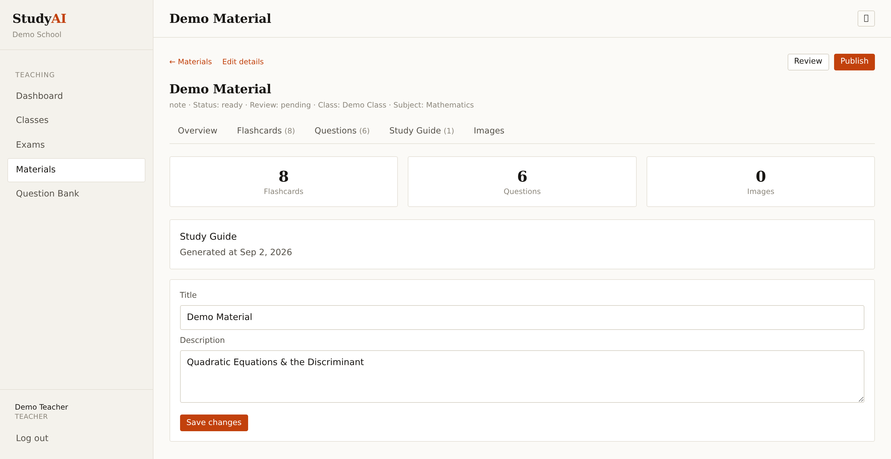
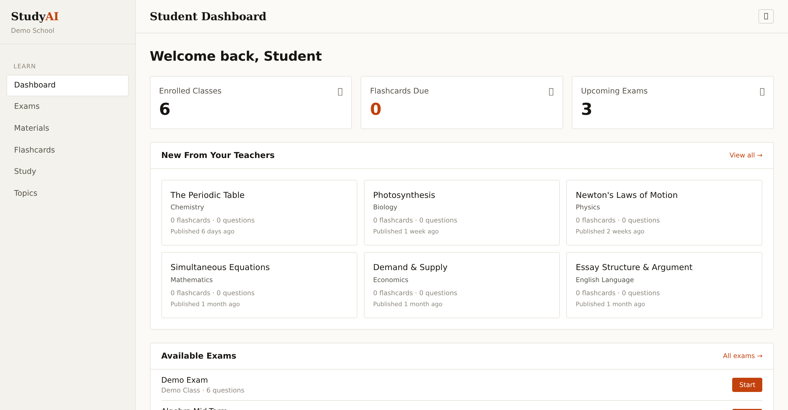
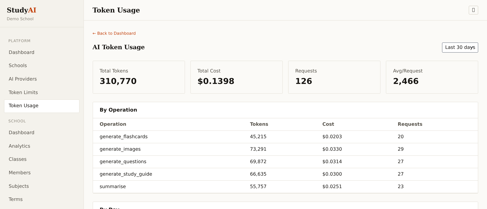

StudyAI helps teachers generate flashcards, exam questions and study guides from material they already have — reviewed and approved before a single student sees it.

Classes, materials, exams and a shared question bank in one place — with AI doing the repetitive preparation.
A clear view of classes, upcoming exams and flashcards scheduled by spaced repetition for real retention.
Multi-school administration, role-based access and full visibility of AI usage and cost.
Access is enforced on the server, not hidden in the interface — and every school's data is fully isolated from every other.


Every screen shown here is the working product, not a mockup. We can load your curriculum and walk your team through it end to end in under an hour.